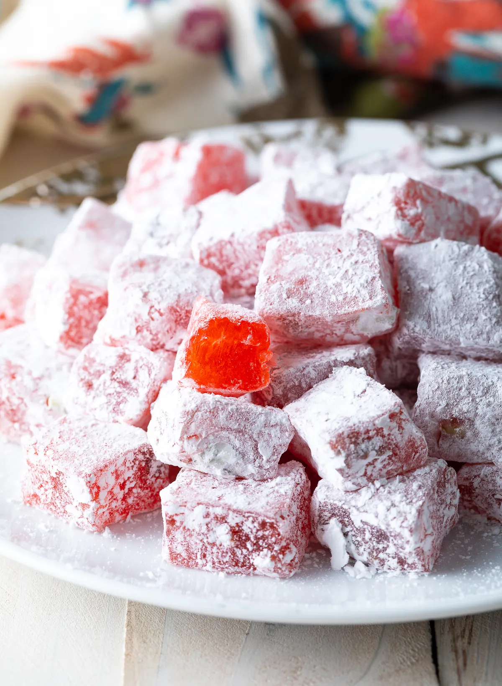

Ingredients
- 4 cups granulated sugar
- 4 cups water, divided
- 3 tablespoons lemon juice
- 1 cup cornstarch
- 1 teaspoon cream of tartar
- 2 tablespoons rosewater
- 1 teaspoon raspberry extract
- 1 teaspoon orange extract
- 1 teaspoon salt
- .25 cup chopped pistachios
- 1 cup powdered sugar
- 4-6 drops red food coloring
Description
Soft, slightly chewy, perfectly sweet Turkish Delight (aka Lokum) is a classic candy that is incredibly easy to make at home.
Recipe Credits:
Steps
- Set two large 4-6 quart stock pots on the stovetop. Attach a candy thermometer onto one pot. Then set out a 9X9 inch baking dish. Line it neatly with foil, then spray it generously with nonstick cooking spray. Set aside.
- Pour 4 cups of sugar and 1 ½ cups of water in the pot with the thermometer. Set on high heat and bring to a boil. Continue to boil until the sugar syrup reaches 240 degrees F.
- Meanwhile, pour the remaining 2 ¾ cups water in the second pot. Whisk in the lemon juice, cornstarch and cream of tartar, making sure there are NO clumps. Turn the heat on high and continue whisking until the mixture forms a thick white paste that resembles petroleum jelly. Again, whisk well to insure there are NO clumps.
- Once the sugar syrup reaches the desired temperature, slowly and carefully pour the hot syrup into the cornstarch paste, a little at a time, making sure there are NO clumps. (This is safest with two sets of hands.)
- Then turn the heat back to medium and simmer for approximately 45 minutes, stirring occasionally, until the mixture looks like thick golden-orange jelly.
- Turn off the heat, stir in the rosewater, raspberry extract, orange extract, and salt. Add food coloring if desired. Then pour half of the mixture into the prepared baking dish.
- Quickly sprinkle with chopped pistachios, then pour the remaining candy mixture over the top before it cools and becomes too thick to pour. (Two sets of hands in nice here as well. If you don’t care that the pistachios are directly in the center of the candy, you can simply mix them into the candy mixture and pour it in the pan all at once.)
- Place the dish in the refrigerator and chill for 30-60 minutes, until firm.
- Turn the Turkish delight out of the dish and peel off the foil. Use a sharp knife (or kitchen shears) to cut the candy into approximately 100 tiny squares.
- Add powdered sugar to the empty baking dish. As you cut the candy pieces, give them a good shake in the powdered sugar to coat them on all sides.
- The candy should be somewhat hard after chilling, but will soften as it sits at room temperature.